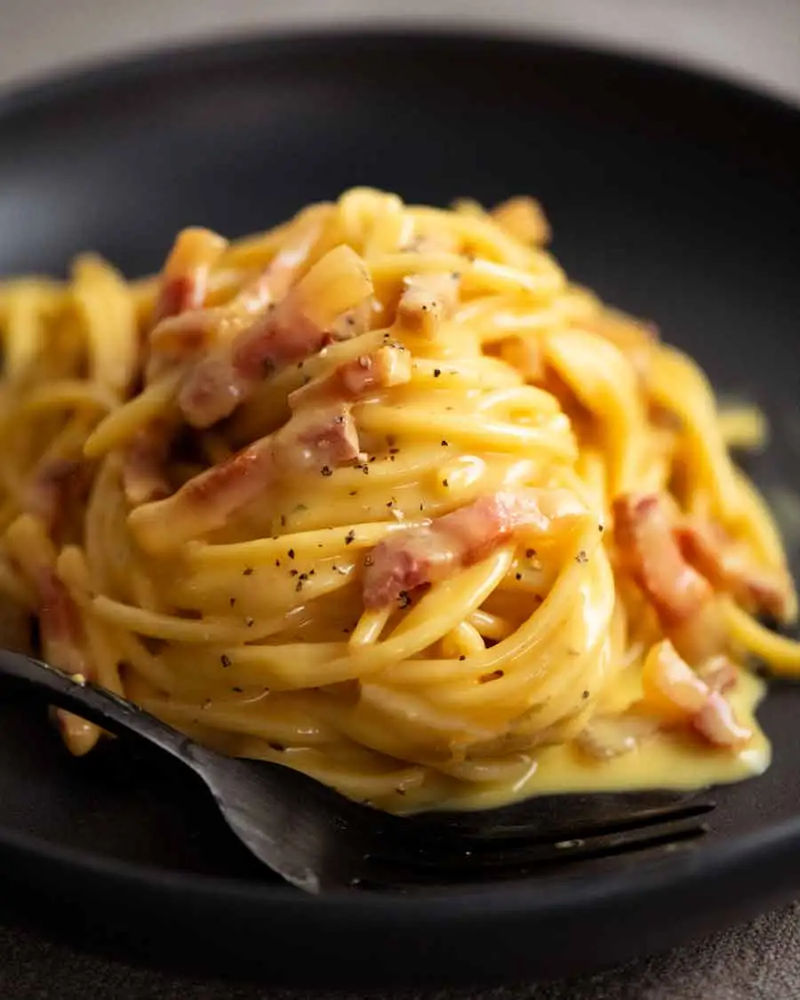

Carbonara!

The emperor of pasta dishes! As easy
as it is rewarding.
Ingredients
- 12 oz. pancettacut (or any kind of bacon)
-
- 1 tbsp. kosher salt
-
- 1 lb. spaghetti
-
- 5 large egg yolks
-
- 1 large egg
-
- 4 oz. finely grated Pecorino Romano
-
- Freshly ground black pepper
-
Method
- Put the pasta (of your choice) on to cook for as long as necessary.
While that's working, fry the bacon.
- wisk the egg yolks/egg together and season with salt, cheese, and pepper
- mix the pasta (along with one cup of the same water used to boil the pasta)
together with the egg mix. Add the bacon along with all of the residual oil
together to this mix
- stir vigorously for several minutes until the eggy sauce surrounding
the pasta has thickened
- I should now be ready to serve!
Home